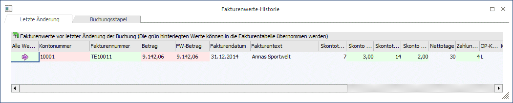

Über den Button "Fakturenwerte-Historie" in der Fakturentabelle öffnet sich das Fenster "Fakturenwerte-Historie".
In diesem Fenster gibt es zwei Register:
ü Letzte Änderung
In der Tabelle
werden die für diese Buchung weg gespeicherten Werte angezeigt.
ü Buchungsstapel
In der Tabelle
werden (wenn es sich um einen geladenen Stapel handelt) die im Stapel
gespeicherten Werte angezeigt.

Um die Unterschiede zwischen altem und neuem OP einfach erkennen zu können, sind die Tabellenspalten eingefärbt:
ü grün
Gibt es in einer Spalte
unterschiedliche Werte und das Feld kann übernommen werden, wird diese grün
hinterlegt.
ü rot
Gibt es in einer Spalte
unterschiedliche Werte, das Feld kann aber nicht übernommen werden, wird diese
rot hinterlegt.
ü Hintergrundfarbe
Gibt es in
einer Spalte keine unterschiedlichen Werte, behält diese die
Hintergrundfarbe.
Die grün hinterlegten Werte können mittels Drag&Drop in die Fakturentabelle übernommen werden, das entsprechende Feld in der betroffenen Zeile in der Fakturentabelle wird sofort aktualisiert.
Wird die erste Spalte "Alle Werte übernehmen" in die Fakturentabelle gezogen, werden alle "grünen" Werte dieser Zeile in die entsprechende Zeile der Fakturentabelle übernommen.
Wenn "alle Werte" mittels Drag&Drop in der entsprechenden Spalte übernommen werden, können diese auch in eine neue Zeile in der Fakturentabelle gezogen werden. In diesem Fall wird der bestehende OP dupliziert und mit den übernommenen Werten aktualisiert.
Folgende Werte werden in der Tabelle zur Info angezeigt und können nie übernommen werden:
ü Kontonummer
ü Buchungsnummer
ü Betrag
ü FW-Betrag